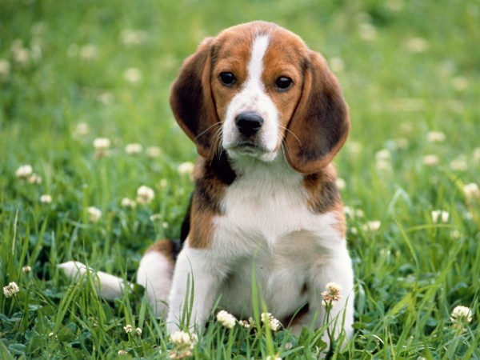
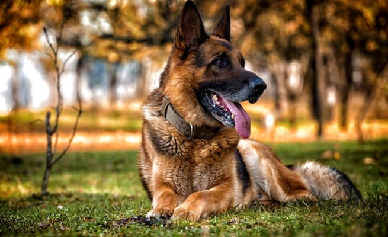
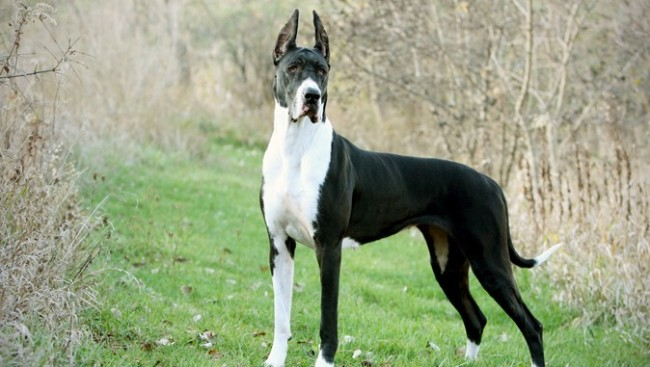
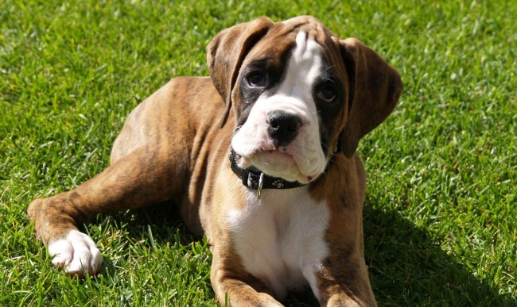
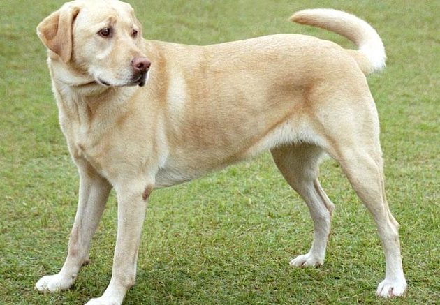
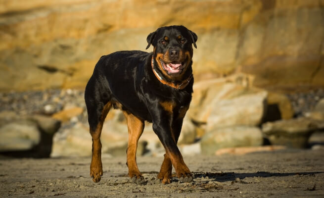
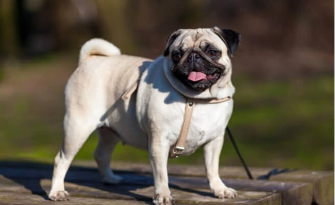
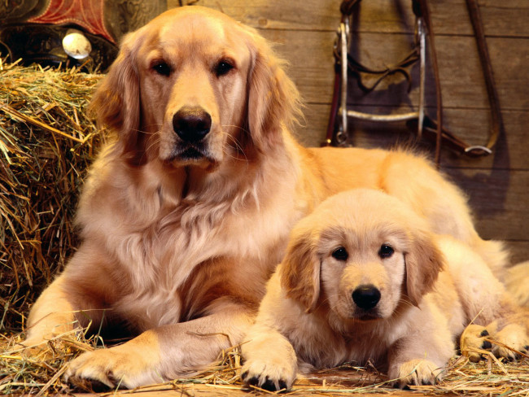
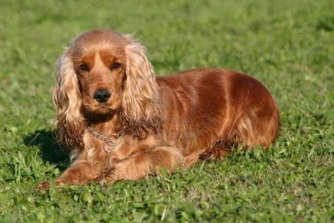
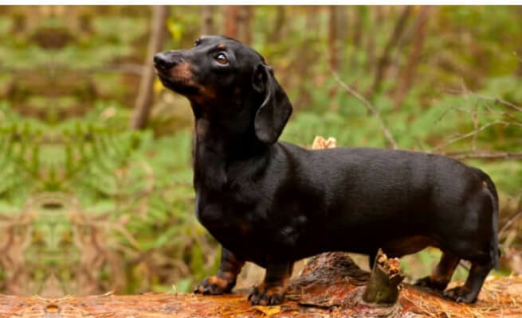

Top 10 Popular Dog Breeds in India
The dog lovers world over know that dog is the best pet to be adopted. Dogs are the most loyal, affectionate and intelligent animals to be taken as a personal companion. They love their owners unconditionally. No wonder they are “man’s best friend”. Most of the dogs popular with people in India are imported. Some of the most popular dog breeds in India, which can be kept as a pet or guard/watch dogs are:
- Beagles 
- German Shephard 
- Great Dane 
- Boxer 
- Labrador Retriever 
- Rottweiler 
- Pug 
- Golden Retriever 
- Cocker Spaniel 
- Dachshund 
Beagles are extremely friendly and intelligent dogs. It’s the most adorable and one of the preferred pet dog breeds worldwide. It is a small to medium sized compact dog used as a sniffer dog in airports because of its strong sense of smell. It is tricolor or white in combination with black and tan or brown. It has short haired, hard coat of medium length.
Considered an all-purpose worker in the dog’s kingdom, the German Shepherd is curious, loyal, intelligent and a courageous dog breed. They can put their life at stake for the protection of their family, making them one of the best guard dogs in the world. Being an active and agile breed, the German Shepherd would need a sufficient amount of physical activity daily.
Great Dane, often called as the ‘Apollo of Dogs’, is a very obedient guard dog which can be trained easily because of its intelligence. It is very friendly and loves children, people and other dogs. It is available in black, blue, fawn, mantle, harlequin and brindle colors.
It is a very intelligent, sporty dog which is very easy to train. Also, it is one of the best guard dogs to keep. It has a large body and head, a square muzzle and strong jaws. It is gentle, friendly, quiet and protective by nature and is used as guide for blind people. This dog’s inherent patience and protective nature has earned it a reputation as a great dog with children. It can be found in brindle, fawn and white color.
Labradors are famously friendly and companion housemates who bond with the whole family. Their social skills with neighbor dogs and humans are the breeds’ highlight. They come in yellow, black, and a luscious chocolate color.
A breed known for its enormous strength, Rottweiler has a lineage of mastiffs of Roman legions. These dogs are incredibly devoted and loyal to their loved ones, making them great family pets. To make your Rottweilers well behaved, it is suggested they are socialized right from puppyhood. Even though Rottweilers have a short coat, they do shed a fair amount of hair. Using a dog brush that removes dead undercoats in them can tremendously lower the hair fall. Rottweilers come in colors like Black and Tan or Black and Mahagony.
One of the best family dogs, Pugs are ideal for small households and apartment dwellers. Even though pugs shed, the hair fall is quite low, making the dogs very easy to maintain. They don’t need to be bathed unless they get into some dirt or mess. Though they need regular trimming of nails, as long nails can cause uneasiness in them. Pugs come in colors like Black, Fawn, Apricot and Silver Fawn.
Golden Retrievers are very popular with people as pets because of their loving and obedient nature. They are very intelligent, can be trained well and excel in competitions. They make good watch dogs. They are sturdy, good looking, medium sized dogs. They have a water resistant coat, dense with straight or wavy outer coat requiring regular grooming. They come in cream and rich golden colors.
Cocker Spaniel is a medium sized dog with dark almond shaped eyes. It has a litter size of average 5 puppies. It is a fairly active dog suitable to live in an apartment. It has a silky coat of medium length, which is flat or slightly wavy. The colors it is available in are black with tan points, merle, parti-color (white with black, white with black and tan etc.)
A bundle of energy in a small body, Dachshunds are dogs famous for their ever-alert expression. These dogs come in two sizes, standard and miniature, the miniature being the smaller. Even though they are little dogs, their bark is so loud that it can terrify the visitors at your house. Dachshunds live longer and have an average lifespan of around 15 years.